Соцветие (см. Рис. 1) – несколько цветков, расположенных упорядоченно близко друг к другу. Также соцветие включает оси – побеги, несущие цветки.
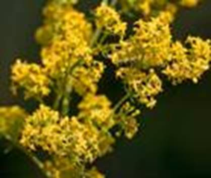
Рис. 1. Соцветия
Биологический смысл появления соцветия – возрастание вероятности опыления. Так как цветки, собираясь в большие яркие соцветия, становятся более заметными для насекомых, также они дают наибольшее количество пыльцы.
Соцветия бывают простыми и сложными, голыми и облиственными.
Облиственные (см. Рис. 2) – соцветия, в которых прицветные листья имеют хорошо развитые зеленые пластинки (фуксия, фиалка трехцветная).
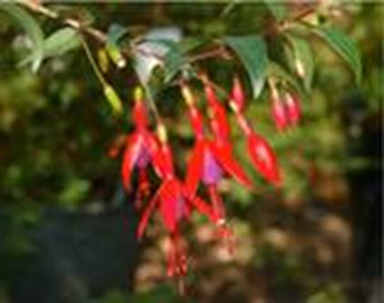
Рис. 2. Облиственное соцветие
Голые (см. Рис. 3) – соцветия, в которых прицветники редуцированы: уменьшены либо совсем отсутствуют (дикая редька, пастушья сумка).
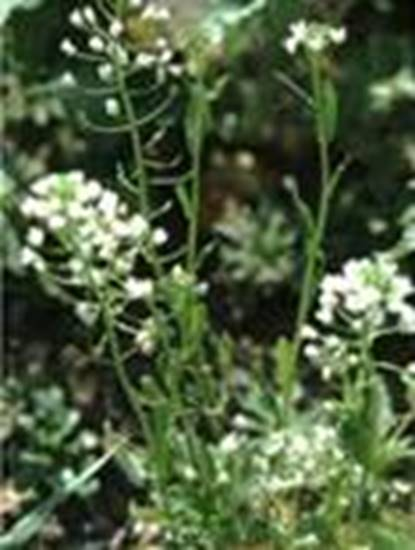
Рис. 3. Голое соцветие
У некоторых соцветий растет четко выраженная главная ось. Цветки раскрываются в порядке от основания к верхушке (орхидея). В некоторых случаях главная ось короткая и несет на себе также короткие оси. Цветки раскрываются в порядке от верхушки оси к ее основанию.
По степени разветвления соцветия делятся на простые и сложные.
Простые соцветия – соцветия, у которых на главной оси сидят непосредственно цветки. Обычно имеют длинную главную ось.
Кисть (см. Рис. 4) – отдельные цветки расположены один за другим на хорошо заметных цветоножках, отходящих от длинной общей оси (капуста, ландыш, черемуха).
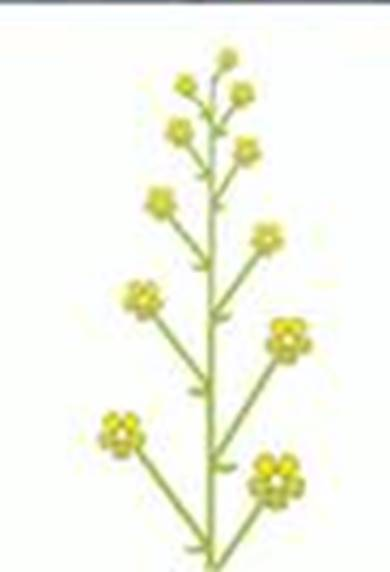
Рис. 4. Кисть
Простой колос (см. Рис. 5) – образует сидячие цветки на общей оси (подорожник).
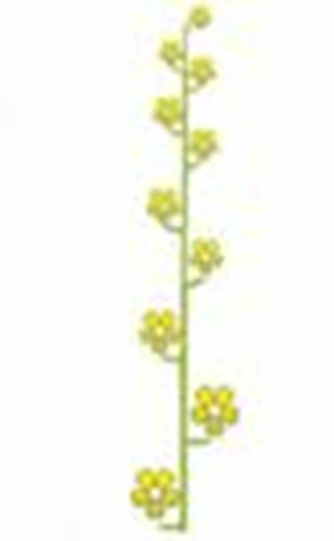
Рис. 5. Простой колос
Початок (см. Рис. 6) – имеет толстую мясистую ось соцветия и сидячие цветки (белокрыльник, кукуруза, монстера).
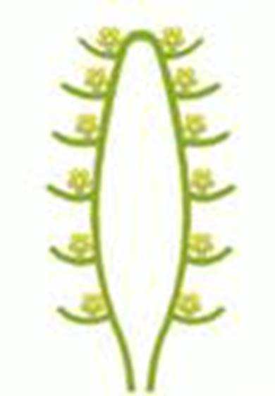
Рис. 6. Початок
Простой зонтик (см. Рис. 7) – цветоножки выходят из вершины оси (примула).
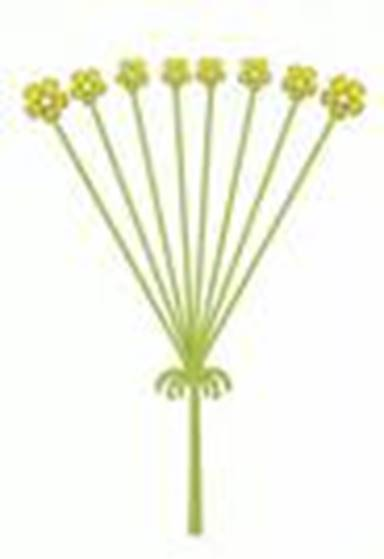
Рис. 7. Простой зонтик
Щиток (см. Рис. 8) – соцветие, в котором нижние цветоножки намного длиннее верхних, цветы расположены на одном уровне (садовая груша).
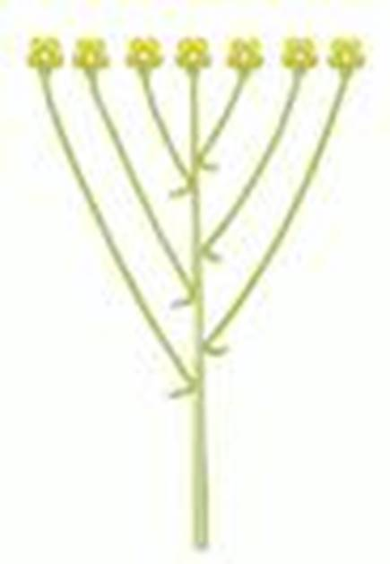
Рис. 8. Щиток
Головка (см. Рис. 9) – соцветие, у которого укороченная главная ось с сидячими цветками (клевер, люцерна).
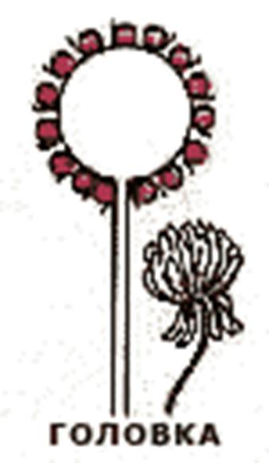
Рис. 9. Головка (Источник)
Корзинка (см. Рис. 10) – на расширенной блюдцеобразной оси расположены сидячие цветки (подсолнух, астра).
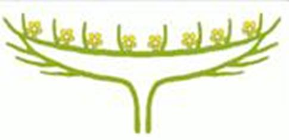
Рис. 10. Корзинка
Сложные соцветия – соцветия, у которых на главной оси располагаются простые соцветия.
Дихазий (см. Рис. 11) – соцветие без выраженной главной оси. Каждая ось несет 2 оси следующего порядка.
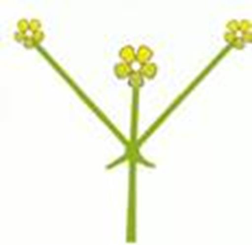
Рис. 11. Дихазий
Монохазий (см. Рис. 12) – соцветия, у которых каждая материнская ось несет только 1 дочернюю.
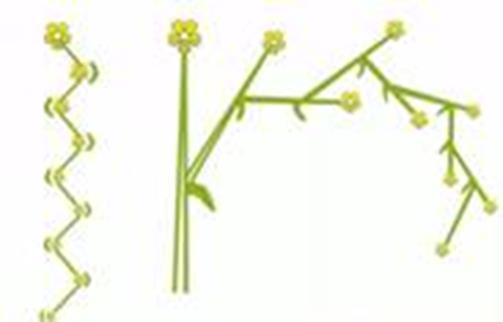
Рис. 12. Монохазий
Плейохазий (см. Рис. 13) – соцветия, у которых от материнской оси отходит более 2, мутовчато расположенные, дочерние (бузина).
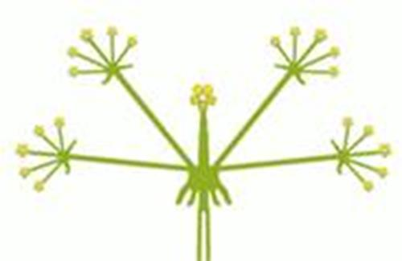
Рис. 13. Плейохазий
Метелка (см. Рис 14) – сложная кисть – от общей оси отходят несколько кистей (сирень, виноград).
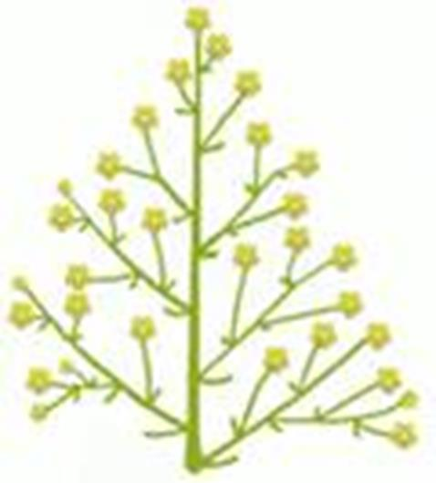
Рис. 14. Метелка
Сложный колос (см. Рис 15) – несколько колосков, сидящих на общей оси (пшеница, ячмень).
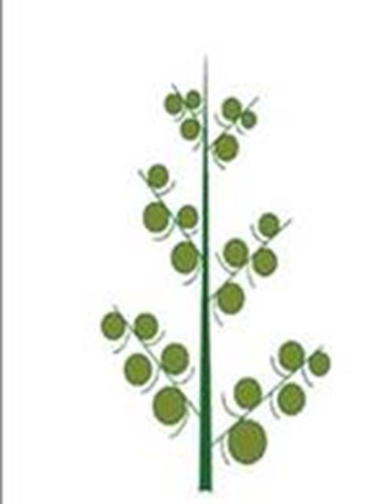
Рис. 15. Сложный колос (Источник)
Сложный зонтик (см. Рис. 16) – соцветие из простых зонтиков (морковь, петрушка).
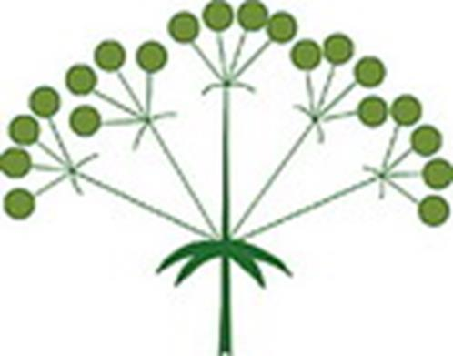
Рис. 16. Сложный зонтик (Источник)
Сережки (см. Рис 17) – соцветия различных типов, у которых главная ось повисшая (ольха, береза).
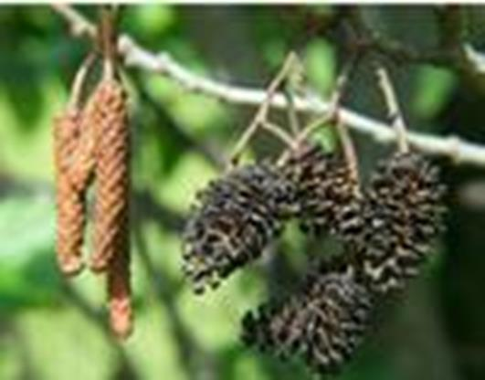
Рис. 17. Сережки
Агрегатные соцветия (см. Рис. 18) – сложные соцветия, у которых тип ветвления главной оси отличается от типов ветвления таковых у простых соцветий (аралия).
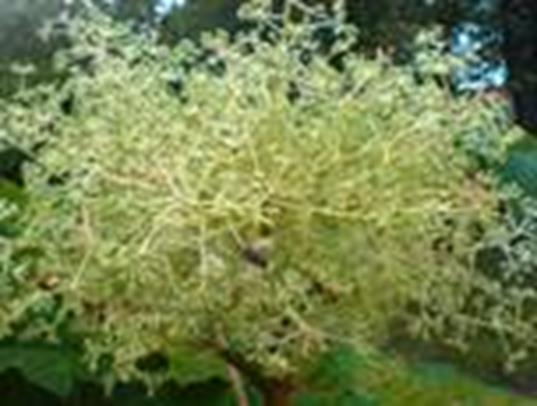
Рис. 18. Метелка-зонтик аралии
Антодий – небольшое компактное соцветие, по внешнему виду напоминающее цветок. Характерно для фикусов, молочаев. Пример антодия – корзинка.
Для сложноцветных характерно 3 типа цветков соцветия корзинки: язычковые, ложноязычковые, трубчатые.
Снизу ось цветков окружена оберткой, сформированной из верхних листьев. Листочки обертки имитируют чашечку цветка.
Рассмотрите соцветия на живых и гербаризованных растениях. Определите и зарисуйте расположение цветков на цветоносных стеблях. Выясните название соцветий.
Список литературы
1. Биология. Бактерии, грибы, растения. 6 кл.: учеб. для общеобразоват. учреждений / В.В. Пасечник. – 14-е изд., стереотип. – М.: Дрофа, 2011. – 304 с.: ил.
2. Тихонова Е.Т., Романова Н.И. Биология, 6. – М.: Русское слово.
3. Исаева Т.А., Романова Н.И. Биология, 6. – М.: Русское слово.
Дополнительные рекомендованные ссылки на ресурсы сети Интернет
1. 6y.ru (Источник).
2. Trifoly.ru (Источник).
3. Bioaa.info (Источник).
Домашнее задание
1. Биология. Бактерии, грибы, растения. 6 кл.: учеб. для общеобразоват. учреждений / В.В. Пасечник. – 14-е изд., стереотип. – М.: Дрофа, 2011. – 304 с.: ил. – с. 141, задания и вопросы 3 (Источник).
2. Перечислите простые соцветия. Дайте их характеристику.
3. Что такое соцветия? Какие существуют классификации соцветий?
4. * Назовите типы соцветий покрытосеменных растений вашего двора. Обсудите со своими друзьями, родственниками.
{kind=link}
{kind=link}
{kind=link}